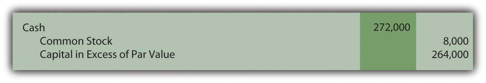
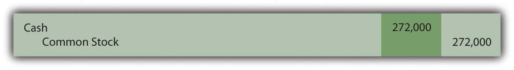
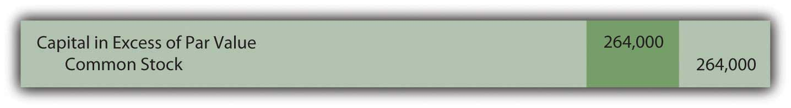
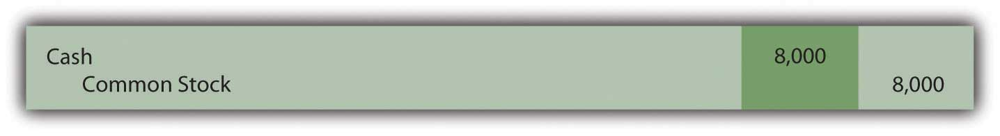
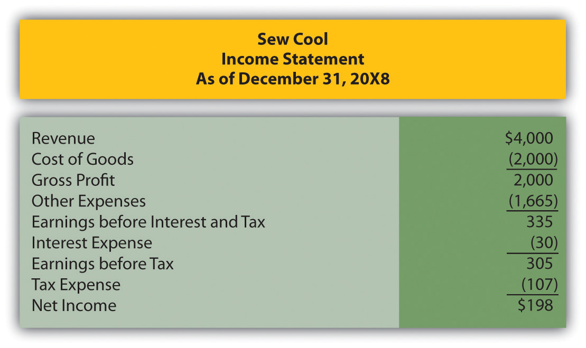
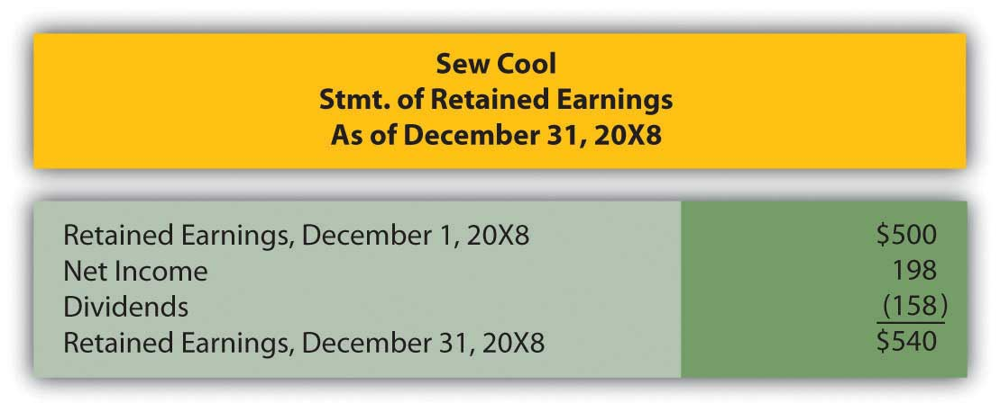
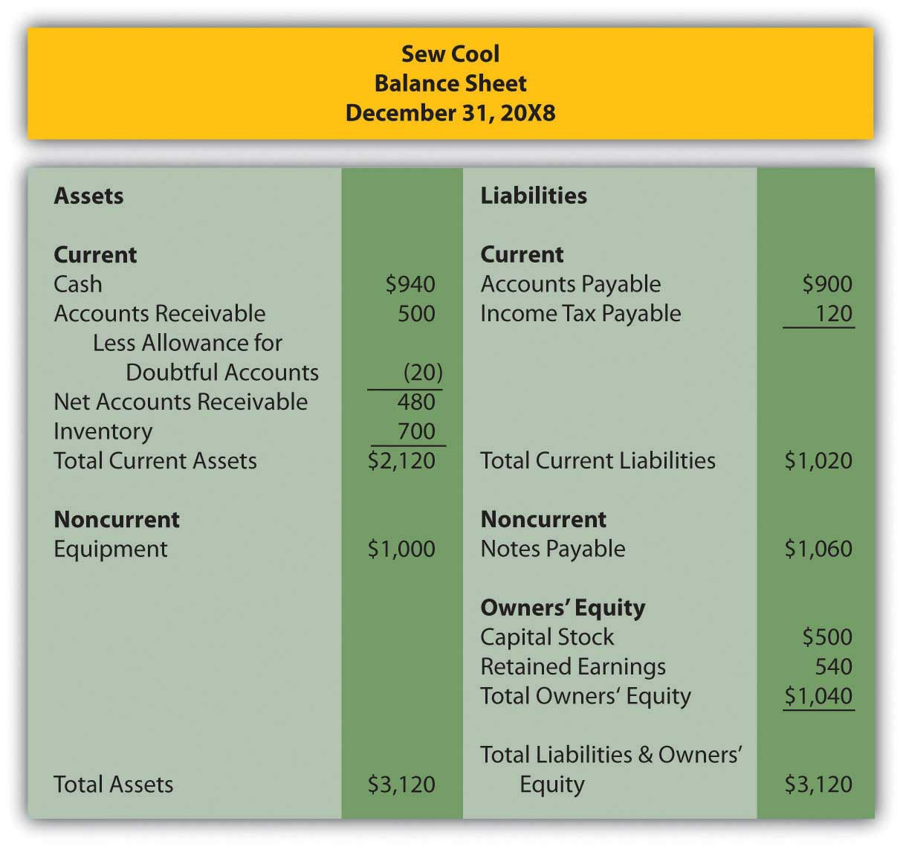
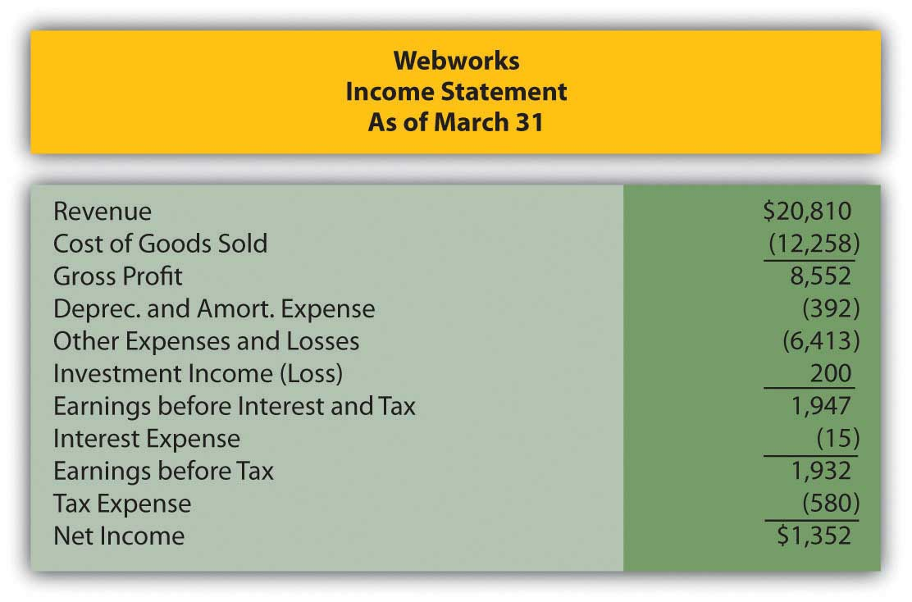
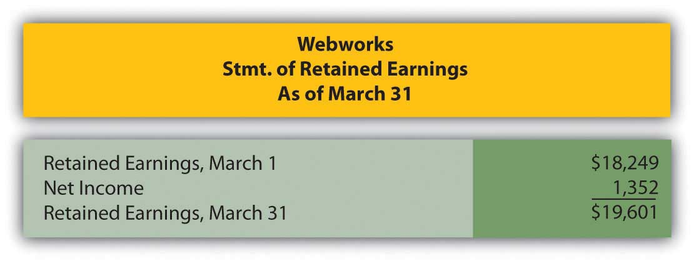
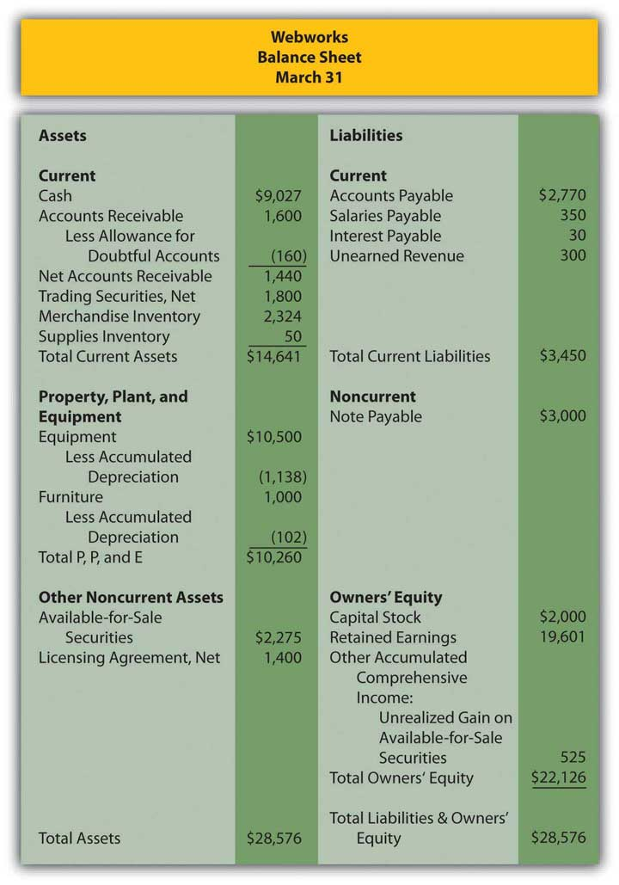

Which of the following forms of business is subject to double taxation?
Yancey Corporation issues 50,000 shares of common stock for $30 per share. The stock has a par value of $2 per share. By what amount would Yancey credit capital in excess of par?
Landon Corporation sold 16,000 shares of $0.50 par value common stock for $17 per share. Which of the following is the journal entry Landon should make?
Figure 16.12
Figure 16.13
Figure 16.14
Figure 16.15
Jackson Company is authorized to issue 20,000 shares of $0.50 par value stock. On February 1, it issues 4,000 shares. On April 20, an additional 6,000 shares are issued. On September 23, Jackson repurchases 2,000 shares. On November 3, it reissues half of the shares it repurchased in September. How many outstanding shares does Jackson have on December 31?
Paul Mitchell purchased a licensing agreement for $40,000 prior to going to work for Traylor Corporation. Traylor agreed to issue 2,000 shares of common stock to Mitchell in exchange for his licensing agreement, which now has a value of $30,000. At the time of the stock exchange, Traylor’s $2 par value stock was selling for $14 per share. For what amount should Traylor debit the licensing agreement?
Kramer Company is authorized to issue 45,000 shares of its 7 percent, $100 par value preferred stock. On March 15, Kramer issues 5,000 shares for $200 per share. On November 1, Kramer declares the dividend and pays it on December 1. What amount of cash was paid to the preferred shareholders?
Portor Corporation is authorized to sell 150,000 shares of its $0.25 par value common stock. It currently has 90,000 shares issued and outstanding. Portor would like to declare a stock dividend and is curious about the effect this will have on retained earnings. Portor’s stock has a current market value per share of $26. Portor is trying to decide between a 5 percent stock dividend and a 40 percent stock dividend. Which of the following accurately shows the effect of each on retained earnings?
| 5% Stock Dividend | 40% Stock Dividend | |
|---|---|---|
| a. | $117,000 | $936,000 |
| b. | $117,000 | $9,000 |
| c. | $1,125 | $9,000 |
| d. | $1,125 | $936,000 |
Falls Church Corporation ended the year with revenues of $45,000 and expenses of $33,000. Its stockholders’ equity accounts total $490,000. Which of the following is Falls Church’s return on equity for the year?
Fleming Corporation began and ended the year with 50,000 outstanding shares of common stock net income for the year totaled $480,000. Preferred dividends amounted to $30,000. Which of the following would be Fleming’s basic earnings per share?
Which of the following would not force a company to compute diluted earnings per share in addition to basic earnings per share?
Friar Inc. had a net income for 20X5 of $1,870,000. It had 600,000 shares of common stock outstanding on 1/1/X5 and repurchased 150,000 of those shares on 8/31/X5. It has no preferred stock. On 12/31/X5, Friar’s stock was selling for $26 per share. Which of the following is Friar’s price-earnings ratio on 12/31/X5?
McNair Corporation is authorized to issue 105,000 shares of 5 percent, $200 par value preferred stock. On May 22, McNair issues 32,000 shares for $325 per share. McNair declares the preferred dividend on September 1 and pays it on October 1.
Douglas Company’s board of directors approves a plan to buy back shares of its common stock. Prepare journal entries for each of the following transactions. Assume that the transactions occur in the order given.
Grayson Corporation is authorized to sell 2,000,000 shares of its $1 par value common stock to the public. Before 20X7, it had issued 60,000 shares with a market value of $12 per share. During 20X7, Grishom issued another 14,000 shares when the market value per share was $24.
On 1/1/X7, Grishom had retained earnings of $1,950,000. During 20X7, Grishom earned net income of $80,000 and paid dividends to common stockholders of $19,000. Also during 20X7, Grishom repurchased 11,000 shares of its own stock when the market price was $22.
In late 20X2, the Pickins Corporation was formed. The articles of incorporation authorize 5,000,000 shares of common stock carrying a $1 par value, and 1,000,000 shares of $5 par value preferred stock. On January 1, 20X3, 2,000,000 shares of common stock are issued for $15 per share. Also on January 1, 500,000 shares of preferred stock are issued at $30 per share.
Prepare journal entries to record these transactions on January 1.
During March 20X3, the Pickins Corporation repurchased 100,000 common shares for the treasury at a price of $13 per share. During August 20X3, all 100,000 treasury shares are reissued at $16 per share.
Prepare journal entries to record these transactions.
During November 20X3, Pickins issues a 25 percent stock dividend on all outstanding shares when its stock was selling for $50 per share. On December 1, 20X3, Pickens declares a $0.75 per share cash dividend on common stock and a $2.00 per share cash dividend on preferred stock. Payment is scheduled for December 20, 20X3, to shareholders of record on December 10, 20X3.
On March 1, St. George Company declares a stock dividend on its $1 par value stock. It had 1,000 shares outstanding and the market value was $13 per share.
Rawlings Company has the following equity accounts at the beginning and end of 20X3:
| 1/1/X3 | 12/31/X3 | |
|---|---|---|
| Preferred Stock, 6%, $100 par value | $2,000,000 | $2,000,000 |
| Common Stock, $1 Par Value | $160,000 | $200,000 |
| Capital in Excess of Par, Common | $12,000,000 | $16,000,000 |
| Retained Earnings | $1,100,000 | $1,800,000 |
The additional 40,000 shares of common stock were issued on September 1, 20X3. Preferred stock was paid its dividend during the year. Net income for the year was $1,200,000.
Determine Rawlings’ basic EPS on December 31, 20X3.
Information on Massaff Corporation’s stock accounts follows:
| December 31_______ | 20X7 | 20X8 | |
|---|---|---|---|
| Outstanding shares of: | |||
| Common stock | 300,000 | 330,000 | |
| Nonconvertible preferred stock | 10,000 | 10,000 |
The following additional information is available:
Compute Massaff’s basic earnings per common share for the year ended December 31, 20X8.
In several past chapters, we have met Heather Miller, who started her own business, Sew Cool. The financial statements for December are shown below.
Figure 16.16 Sew Cool Financial Statements
Figure 16.17
Figure 16.18
Based on the financial statements determine Sew Cool’s return on equity.
This problem will carry through several chapters, building in difficulty. It allows students to continuously practice skills and knowledge learned in previous chapters.
In Chapter 15 "In Financial Statements, What Information Is Conveyed about Other Noncurrent Liabilities?", you prepared Webworks statements for March. They are included here as a starting point for April.
Here are Webworks financial statements as of March 31.
Figure 16.19 Webworks Financial Statements
Figure 16.20
Figure 16.21
The following events occur during April:
a. Webworks starts and completes ten more Web sites and bills clients for $7,000.
b. Leon invites Nancy to invest money in the business. She contributes $2,000 and becomes an equal owner with Leon.
c. Webworks purchases supplies worth $125 on account.
d. At the beginning of April, Webworks had fourteen keyboards costing $120 each and twenty-eight flash drives costing $23 each. Webworks uses periodic FIFO to cost its inventory.
e. On account, Webworks purchases ninety-five keyboards for $121 each and ninety flash drives for $25 each.
f. Webworks sells eighty-seven keyboards for $13,050 and ninety-five of the flash drives for $2,850 cash.
g. Webworks collects $6,400 in accounts receivable.
h. Webworks pays its $500 rent.
i. Webworks pays off $14,000 of its accounts payable.
j. Webworks sells all of its shares of RST stock for $20 per share.
k. Webworks pays Juan $700 for his work during the first three weeks of April.
l. Webworks writes off an account receivable from December in the amount of $150 because collection appears unlikely.
m. Webworks pays off its salaries payable from March.
n. Webworks pays Leon and Nancy a salary of $3,500 each.
o. Webworks completes the design for the photographer for which it was paid in February. The $300 of the unearned revenue should be reclassified to revenue.
p. Webworks pays Nancy and Leon a dividend of $250 each.
q. Webworks pays taxes of $372 in cash.
Required:
A. Prepare journal entries for the above events.
B. Post the journal entries to T-accounts.
C. Prepare an unadjusted trial balance for Webworks for April.
D. Prepare adjusting entries for the following and post them to your T-accounts.
r. Webworks owes Juan $100 for his work during the last week of April.
s. Webworks receives an electric bill for $440. Webworks will pay the bill in May.
t. Webworks determines that it has $65 worth of supplies remaining at the end of April.
u. Webworks is continuing to accrue bad debts at 10 percent of accounts receivable.
v. Webworks continues to depreciate its equipment over five years and its furniture over five years, using the straight-line method.
w. The license agreement should be amortized over its one-year life.
x. QRS Company is selling for $14 per share on April 30.
y. Interest should be accrued for April.
z. Record cost of goods sold.
E. Prepare an adjusted trial balance.
F. Prepare financial statements for April.